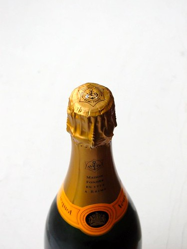

Liz and Jack begin by taking stock of the lay of the land. Liz asks the homeowners what they'd settle for while Jack encourages them to dream far beyond their budget.
During the remodel Liz pushes for practical time saving family-friendly home design while Jack brings a touch of over-the-top decadence to the designs.
Jack brings in his assistant Jonathan's family to do the tear down since he sent Manuelo home when he was vying to be the CEO of GE (thank goodness that didn't happen or we wouldn't have the beautiful home renovations he does now).
Once the remodel is over Jack gifts the homeowners some Donaghy Estates champagne as he's still trying to get rid of the excess inventory he couldn't get rid of at the Source Awards.
